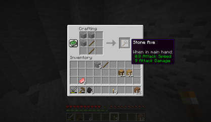
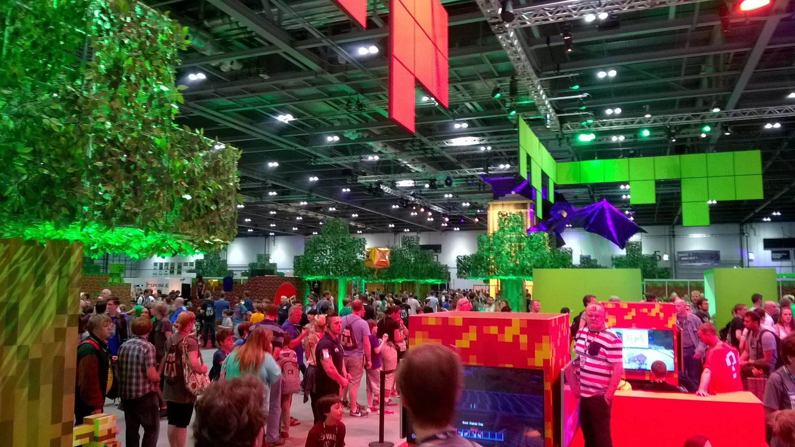

Gameplay
Minecraft is a 3D sandbox game that allows players a large degree of freedom in choosing how to play the game. There is no required goal to accomplish, but there is an achievement system in place. Gameplay is in the first-person perspective by default, but players can also play in third-person. The game world is composed of 3D blocks that represent various materials. The core gameplay revolves around picking up and placing these objects. Players can "mine" blocks and then place them elsewhere, enabling them to build things. The game also contains a material called redstone, which can be used to make primitive mechanical devices, electrical circuits, and logic gates, allowing for the construction of many complex systems. The game world is virtually infinite and procedurally generated as players explore it, using a map seed that is obtained from the system clock at the time of world creation. The world is divided into biomes ranging from deserts to jungles to snowfields, and the terrain includes plains, mountains, forests, caves, and bodies of water or lava. The in-game time system follows a day and night cycle, with one full cycle lasting for 20 real-time minutes. When starting a new world, players must choose one of five game modes, as well as one of four difficulties, ranging from "Peaceful" to "Hard". There are various mobs and creatures in the game, including animals, villagers, and hostile creatures. Players can hunt passive mobs for food and crafting materials, while hostile mobs spawn during nighttime or in dark places such as caves. Some hostile mobs burn under the sun if they have no headgear. There are also variants of mobs that spawn in different conditions, and other creatures unique to Minecraft include the creeper (an exploding creature that sneaks up on the player) and the enderman (a creature with the ability to teleport as well as pick up and place blocks). Players can also encounter underwater mobs, such as guardians and drowned zombies, when exploring oceans and other bodies of water. Minecraft also features various boss mobs, including the Ender Dragon and the Wither, which require players to gather specific resources and prepare themselves for a challenging battle. In addition to the base game, Minecraft has a variety of mods and user-created content available for download. These can range from simple texture packs to completely new game modes and mechanics, greatly expanding the possibilities for player creativity and gameplay. Overall, Minecraft's open-ended gameplay, virtually infinite world, and creative possibilities have made it a popular and enduring game since its initial release in 2011.
Dimensions
The Nether
The Nether is a hell-like underworld dimension accessed via either a player-built obsidian portal or one of the Ruined Portals randomly generated throughout the world. It contains many unique resources and can be used to travel great distances in the Overworld, due to every block traveled in the Nether being equivalent to 8 blocks traveled in the Overworld. Water cannot exist in the Nether, as it vaporizes instantly. The Nether is mainly populated by pigman-like mobs called piglins and their zombified counterparts, plus floating balloon-like mobs called ghasts. The player can also build an optional boss mob called The Wither out of materials found in the Nether.
The End
The End is reached by underground portals in the Overworld. It consists of islands floating above a dark, bottomless void. A boss dragon called the Ender Dragon guards the largest, central island. Killing the dragon opens access to an exit portal, which, when entered, cues the game's ending credits and the End Poem, a roughly 1,500-word work written by Irish novelist Julian Gough, which takes about nine minutes to scroll past and is the game's only narrative text and only text of significant length directed at the player. At the conclusion of the credits, the player is teleported back to their respawn point and may continue the game indefinitely.
Gamemodes
Survival mode
The crafting menu in *Minecraft*, showing the crafting recipe of a stone axe as well as some other blocks and items in the player's inventory In survival mode, players have to gather natural resources such as wood and stone found in the environment in order to craft certain blocks and items. Depending on the difficulty, monsters spawn in darker areas outside a certain radius of the character, requiring players to build a shelter at night. The mode also has a health bar which is depleted by attacks from mobs, falls, drowning, falling into lava, suffocation, starvation, and other events. Players also have a hunger bar, which must be periodically refilled by eating food in-game (except in peaceful difficulty). If the hunger bar is depleted, automatic healing will stop and eventually health will deplete. Health replenishes when players have a nearly full hunger bar or continuously on peaceful difficulty. Players can craft a wide variety of items in *Minecraft*. Craftable items include armor, which mitigates damage from attacks; weapons (such as swords or axes), which allows monsters and animals to be killed more easily; and tools (such as pickaxes or hoes), which break certain types of blocks more quickly. Some items have multiple tiers depending on the material used to craft them, with higher-tier items being more effective and durable. Players can construct furnaces, which can cook food, process ores, and convert materials into other materials. Players may also exchange goods with a villager (NPC) through a trading system, which involves trading emeralds for different goods and vice versa. The game has an inventory system, allowing players to carry a limited number of items. Upon dying, items in the players' inventories are dropped unless the game is reconfigured not to do so. Players then re-spawn at their spawn point, which by default is where players first spawn in the game and can be reset by sleeping in a bed (in the overworld) or using a respawn anchor (in the Nether). Dropped items can be recovered if players can reach them before they disappear or despawn after 5 minutes. Players may acquire experience points by killing mobs and other players, mining, smelting ores, breeding animals, and cooking food. Experience can then be spent on enchanting tools, armor, and weapons. Enchanted items are generally more powerful, last longer, or have other special effects.
Creative mode
In creative mode, players have access to nearly all resources and items in the game through the inventory menu and can place or remove them instantly. Players can toggle the ability to fly freely around the game world at will, and their characters do not take any damage and are not affected by hunger. The game mode helps players focus on building and creating projects of any size without disturbance.
Multiplayer
Multiplayer in *Minecraft* enables multiple players to interact and communicate with each other on a single world. It is available through direct game-to-game multiplayer, LAN play, local split screen (console-only), and servers (player-hosted and business-hosted). Players can run their own servers, use a hosting provider, or connect directly to another player's game via Xbox Live. Single-player worlds have local area network support, allowing players to join a world on locally interconnected computers without a server setup. *Minecraft* multiplayer servers are guided by server operators, who have access to server commands such as setting the time of day and teleporting players. Operators can also set up restrictions concerning which usernames or IP addresses are allowed or disallowed to enter the server. Multiplayer servers have a wide range of activities, with some servers having their own unique rules and customs. The largest and most popular server is Hypixel, which has been visited by over 14 million unique players. Player versus player combat (PvP) can be enabled to allow fighting between players. Many servers have custom plugins that allow actions that are not normally possible.
Minecraft Realms
In 2013, Mojang announced Minecraft Realms, a server hosting service intended to enable players to run server multiplayer games easily and safely without having to set up their own. Unlike a standard server, only invited players can join Realms servers, and these servers do not use IP addresses. Minecraft: Java Edition Realms server owners can invite up to twenty people to play on their server, with up to ten players online at a time. Minecraft Realms server owners can invite up to 3,000 people to play on their server, with up to ten players online at one time. The Minecraft: Java Edition Realms servers do not support user-made plugins, but players can play custom Minecraft maps. Minecraft Realms servers support user-made add-ons, resource packs, behavior packs, and custom Minecraft maps. At Electronic Entertainment Expo 2016, support for cross-platform play between Windows 10, iOS, and Android platforms was added through Realms starting in June 2016, with Xbox One and Nintendo Switch support to come later in 2017, and support for virtual reality devices. On 31 July 2017, Mojang released the beta version of the update allowing cross-platform play. Nintendo Switch support for Realms was released in July 2018.
Customization
The modding community consists of fans, users and third-party programmers. Using a variety of application program interfaces that have arisen over time, they have produced a wide variety of downloadable content forMinecraft, such as modifications, texture packs and custom maps. Modifications of the Minecraft code, called mods, add a variety of gameplay changes, ranging from new blocks, items, and mobs to entire arrays of mechanisms. The modding community is responsible for a substantial supply of mods from ones that enhance gameplay, such as minimaps, waypoints, and durability counters, to ones that add to the game elements from other video games and media. While a variety of mod frameworks were independently developed by reverse engineering the code, Mojang has also enhanced vanilla Minecraft with official frameworks for modification, allowing the production of community-created resource packs, which alter certain game elements including textures and sounds. Players can also create their own "maps" (custom world save files) which often contain specific rules, challenges, puzzles and quests, and share them for others to play. Mojang added an adventure mode in August 2012 and "command blocks" in October 2012, which were created specially for custom maps in Java Edition. Data packs, introduced in version 1.13 of the Java Edition, allow further customization, including the ability to add new advancements, dimensions, functions, loot tables, predicates, recipes, structures, tags, world generation settings, and biomes. The Xbox 360 Edition supported downloadable content, which was available to purchase via the Xbox Games Store; these content packs usually contained additional character skins. It later received support for texture packs in its twelfth title update while introducing "mash-up packs", which combined texture packs with skin packs and changes to the game's sounds, music and user interface. The first mash-up pack (and by extension, the first texture pack) for the Xbox 360 Edition was released on 4 September 2013, and was themed after the Mass Effect franchise. Unlike Java Edition, however, the Xbox 360 Edition did not support player-made mods or custom maps. A cross-promotional resource pack based on the Super Mario franchise by Nintendo was released for the Wii U Edition worldwide on 17 May 2016. A mash-up pack based on Fallout was announced for release on the Wii U Edition. In April 2018, malware was discovered in several downloadable user-made Minecraft skins for use with the Java Edition of the game. Avast stated that nearly 50,000 accounts were infected, and when activated, the malware would attempt to reformat the user's hard drive. Mojang promptly patched the issue, and released a statement stating that "the code would not be run or read by the game itself", and would only run when the image containing the skin itself was opened. In June 2017, Mojang released an update known as the "Discovery Update" to the Bedrock version of the game. The update includes a new map, a new game mode, the "Marketplace", a catalogue of user-generated content that gives Minecraft creators "another way to make a living from the game", and more.
Development
Before coming up with Minecraft, Markus "Notch" Persson was a game developer with King through March, at the time serving mostly browser games, during which he learnt a number of different programming languages. He would prototype his own games during his off-hours at home, often based on inspiration he found from other games, and participated frequently on the TIGSource forums for independent developers. One of these personal projects was called "RubyDung", a base-building game inspired by Dwarf Fortress, but as an isometric three dimensional game like RollerCoaster Tycoon. He had already made a 3D texture mapper for another zombie game prototype he had started to try to emulate the style of Grand Theft Auto: Chinatown Wars. Among the features in "RubyDung" he explored was a first-person view similar to Dungeon Keeper but at the time, felt the graphics were too pixelated and omitted this mode. Around March, Persson left King and joined jAlbum, but otherwise kept working on his prototypes. Infiniminer, a block-based open-ended mining game first released in April, sparked Persson's inspiration for how to take "RubyDung" forward. Infiniminer heavily influenced the visual style of gameplay, including bringing back the first-person mode, the "blocky" visual style and the block-building fundamentals. However, unlike Infiniminer, Persson wanted Minecraft to have RPG elements. The original edition of Minecraft, now known as the Java Edition, was first developed in May. Persson released a test video on YouTube of an early version of Minecraft. The base program of Minecraft was completed by Persson over a weekend in that month and a private testing was released on TigIRC on 16 May. The game was first released to the public on 17 May as a developmental release on TIGSource forums. Persson updated the game based on feedback from the forums. This version later became known as the Classic version. Further developmental phases dubbed as Survival Test, Indev, and Infdev were released. The first major update, dubbed Alpha, was released. Although Persson maintained a day job with [Jalbum.net](http://jalbum.net/) at first, he later quit in order to work on Minecraft full-time as sales of the alpha version of the game expanded. Persson continued to update the game with releases distributed to users automatically. These updates included new items, new blocks, new mobs, survival mode, and changes to the game's behavior (e.g. how water flows). To back the development of Minecraft, Persson set up a video game company, Mojang, with the money earned from the game. Mojang co-founders included Jakob Porser, one of Persson's coworkers from King, and Carl Manneh, jAlbum's CEO. On December, Persson announced that Minecraft was entering its beta testing phase. He further stated that bug fixes and all updates leading up to and including the release would still be free. Over the course of the development, Mojang hired several new employees to work on the project. Mojang moved the game out of beta and released the full version. On December, Jens "Jeb" Bergensten took full creative control over Minecraft, replacing Persson as lead designer. On February, Mojang announced that they had hired the developers of the popular "Bukkit" developer API for Minecraft, to improve Minecraft's support of server modifications. This acquisition also included Mojang apparently taking full ownership of the CraftBukkit server mod which enables the use of Bukkit, although the validity of this claim was questioned due to its status as an open-source project with many contributors, licensed under the GNU General Public License and Lesser General Public License. On September, Microsoft announced a $2.5 billion deal to buy Mojang, along with the ownership of the Minecraft intellectual property. The deal was suggested by Persson when he posted a tweet asking a corporation to buy his share of the game after receiving criticism for enforcing terms in the game's end-user license agreement (EULA), which had been present in the EULA in the prior three years. According to Persson, Mojang CEO Carl Manneh received a call from a Microsoft executive shortly after the tweet, asking if Persson was serious about a deal. Mojang was also approached by other companies including Activision Blizzard and Electronic Arts. The deal with Microsoft was arbitrated on November and led to Persson leaving Mojang and the gaming industry altogether. Since then, the development of Minecraft has continued under Microsoft and the game has been released on multiple platforms, including Xbox, PlayStation, and mobile devices. The popularity of Minecraft has led to numerous spin-off games and merchandise, including books, clothing, and toys. It has also become a cultural phenomenon, with players creating their own worlds and sharing them online, as well as using the game for educational purposes. In addition to its cultural impact, Minecraft has also been praised for its open-ended gameplay and its ability to foster creativity and problem-solving skills. It has won numerous awards, including several from the gaming industry. Overall, Minecraft has become one of the most successful and influential video games of all time, with a dedicated fan base that continues to grow and evolve. Its legacy will likely be felt for years to come, both within the gaming industry and beyond.
Minecraft: Pocket Edition
The original edition of Minecraft, now known as the Java Edition, was first developed in May. Persson released a test video on YouTube of an early version of Minecraft. The base program of Minecraft was completed by Persson over a weekend in that month and a private testing was released on TigIRC on 16 May. The game was first released to the public on 17 May as a developmental release on TIGSource forums. Persson updated the game based on feedback from the forums. This version later became known as the Classic version. Further developmental phases dubbed as Survival Test, Indev, and Infdev were released. In August 2011, Minecraft: Pocket Edition was released for the Xperia Play on the Android Market as an early alpha version. It was then released for several other compatible devices on 8 October 2011. An iOS version of Minecraft was released on 17 November 2011. A port was made available for Windows Phones shortly after Microsoft acquired Mojang. The port concentrates on the creative building and the primitive survival aspect of the game and did not contain all the features of the PC release. On his Twitter account, Jens Bergensten said that the Pocket Edition of Minecraft is written in C++ and not Java, due to iOS not being able to support Java. However, there now exists a way to play Java Edition on both Android and iOS devices. On 10 December 2014, a port of Pocket Edition was released for Windows Phone 8.1. In January 2017, Microsoft announced that it would no longer maintain the Windows Phone versions of Pocket Edition. On 19 December 2016, the full version of Minecraft: Pocket Edition was released on iOS, Android, and Windows Phone. Pocket Edition was replaced by Minecraft: Bedrock Edition in 2017, enabling cross-platform play with the Xbox One and Nintendo Switch Editions.
Legacy Console Editions
An Xbox 360 version of the game, developed by 4J Studios, was released on 9 May 2012. On 22 March 2012, it was announced that Minecraft would be the flagship game in a new Xbox Live promotion called Arcade NEXT. The game differs from the home computer versions in a number of ways, including a newly designed crafting system, the control interface, in-game tutorials, split-screen multiplayer, and the ability to play with friends via Xbox Live. The worlds in the Xbox 360 version are also not "infinite", and are essentially barricaded by invisible walls. The Xbox 360 version was originally similar in content to older PC versions, but was gradually updated to bring it closer to the current PC version prior to its discontinuation. An Xbox One version featuring larger worlds among other enhancements was released on 5 September 2014. Versions of the game for the PlayStation 3 and PlayStation 4 were released on 17 December 2013 and 4 September 2014 respectively. The PlayStation 4 version was announced as a launch title, though it was eventually delayed. A version for PlayStation Vita was also released in October 2014. Like the Xbox versions, the PlayStation versions were developed by 4J Studios. On 17 December 2015, Minecraft: Wii U Edition was released. The Wii U version received a physical release on 17 June 2016 in North America, in Japan on 23 June 2016, and in Europe on 30 June 2016. A Nintendo Switch version of the game was released on the Nintendo eShop on 11 May 2017, along with a physical retail version set for a later date. During a Nintendo Direct presentation on 13 September 2017, Nintendo announced that Minecraft: New Nintendo 3DS Edition would be available for download immediately after the livestream, and a physical copy available on a later date. The game is only compatible with the New 3DS and New 3DS XL or New 2DS XL systems and does not work with the original 3DS and 3DS XL or 2DS systems. On 20 September 2017, the Better Together Update was released on the Xbox One, Windows 10, VR, and mobile versions of the game, which used the Pocket Edition engine to enable cross-platform play between each of these versions. This version of the game eventually became known as the Bedrock Edition. Shortly after, the Bedrock Edition was also ported to the Nintendo Switch. On 18 December 2018, the PlayStation 3, PlayStation Vita, Xbox 360, and Wii U versions of Minecraft received their final update and would later become known as Legacy Console Editions. On 15 January 2019, the New Nintendo 3DS version of Minecraft received its final update, effectively becoming discontinued as well. The PlayStation 4 version of Minecraft was updated in December 2019 and became part of the Bedrock Edition, which enabled cross-platform play for users with a free Xbox Live account.
Minecraft Education
Minecraft Education(known as Minecraft: Education Edition until December 2022) is an educational version of the game, designed specifically for use in educational establishments such as schools, and built off of the Bedrock Edition codebase. It is available on Windows 10, MacOS, iPadOS, and ChromeOS. It includes a Chemistry Resource Pack, free lesson plans available online, and two free companion applications: Code Connection and Classroom Mode. An initial beta test was carried out between 9 June and 1 November 2016. The full game was then released on Windows 10 and MacOS on 1 November 2016. On 20 August 2018, Mojang announced that it would bring Education Edition to iPadOS in Autumn 2018. It was released to the App Store on 6 September 2018. On 27 March 2019, it was announced that it would be operated by [JD.com](http://jd.com/) in China. On 26 June 2020, a public beta for the Education Edition was made available to Google Play Store compatible Chromebooks. The full game was released to the Google Play Store for Chromebooks on 7 August 2020.
Cultural Impact
In September 2019, The Guardian classified Minecraft as the best video game of (the first two decades of) the 21st century, and in November 2019 Polygon called the game the "most important game of the decade" in its 2010s "decade in review". In December 2019, Forbes gave Minecraft a special mention in a list of the best video games of the 2010s, stating that the game is "without a doubt one of the most important games of the last ten years." In June 2020, Minecraft was inducted into the World Video Game Hall of Fame. Minecraft is recognized as one of the first successful games to use an early access model to draw in sales prior to its full release version to help fund development. As Minecraft helped to bolster indie game development in the early 2010s, it also helped to popularize the use of the early access model in indie game development. Social media sites such as YouTube, Facebook, and Reddit played a significant role in popularizing Minecraft. Research conducted by the University of Pennsylvania's Annenberg School of Communication showed that one-third of Minecraft players learned about the game via Internet videos. In 2010, Minecraft-related videos began to gain influence on YouTube, often made by commentators. The videos usually contain screen-capture footage of the game and voice-overs. Common coverage in the videos includes creations made by players, walkthroughs of various tasks, and parodies of works in popular culture. By May 2012, over four million Minecraft-related YouTube videos had been uploaded. The game would go on to be a prominent fixture within YouTube's gaming scene during the entire 2010s; in 2014, it was the second-most searched term on the entire platform. By 2018, it was still YouTube's biggest game globally. Some popular commentators have received employment at Machinima, a gaming video company that owns a highly watched entertainment channel on YouTube. The Yogscast is a British company that regularly produces Minecraft videos; their YouTube channel has attained billions of views, and their panel at Minecon 2011 had the highest attendance. Other well-known YouTube personalities include Jordan Maron, who has created many Minecraft parodies, including "Minecraft Style", a parody of the internationally successful single "Gangnam Style" by South Korean rapper Psy. Minecraft's popularity on YouTube was described by Polygon as quietly dominant, although in 2019, thanks in part to PewDiePie's playthroughs of the game, Minecraft experienced a visible uptick in popularity on the platform. YouTube later announced that on 14 December 2021 that the total amount of Minecraft-related views exceeded one trillion since the game's inception in 2009. Minecraft has been referenced by other video games, such as Torchlight II, Team Fortress 2, Borderlands 2, Choplifter HD, Super Meat Boy, The Elder Scrolls V: Skyrim, The Binding of Isaac, The Stanley Parable, FTL: Faster Than Light, and Super Smash Bros. Ultimate, the lattermost of which features a downloadable character and stage based on Minecraft. It was also referenced by electronic music artist deadmau5 in his performances. The game is also referenced heavily in "Informative Murder Porn", the second episode of the seventeenth season of the animated television series South Park.
Applications
The possible applications of Minecraft have been discussed extensively, especially in the fields of computer-aided design (CAD) and education. In a panel at Minecon 2011, a Swedish developer discussed the possibility of using the game to redesign public buildings and parks, stating that rendering using Minecraft was much more user-friendly for the community, making it easier to envision the functionality of new buildings and parks. In 2012, a member of the Human Dynamics group at the MIT Media Lab, Cody Sumter, said: "Notch hasn't just built a game. He's tricked 40 million people into learning to use a CAD program." Various software has been developed to allow virtual designs to be printed using professional 3D printers or personal printers such as MakerBot and RepRap. In September 2012, Mojang began the *Block by Block* project in cooperation with UN Habitat to create real-world environments in *Minecraft*. The project allows young people who live in those environments to participate in designing the changes they would like to see. Using *Minecraft*, the community has helped reconstruct the areas of concern, and citizens are invited to enter the *Minecraft* servers and modify their own neighborhood. Carl Manneh, Mojang's managing director, called the game "the perfect tool to facilitate this process", adding "The three-year partnership will support UN-Habitat's Sustainable Urban Development Network to upgrade 300 public spaces by 2016." Mojang signed *Minecraft* building community, FyreUK, to help render the environments into *Minecraft*. The first pilot project began in Kibera, one of Nairobi's informal settlements and is in the planning phase. The *Block by Block* project is based on an earlier initiative started in October 2011, *Mina Kvarter* (My Block), which gave young people in Swedish communities a tool to visualize how they wanted to change their part of town. According to Manneh, the project was a helpful way to visualize urban planning ideas without necessarily having a training in architecture. The ideas presented by the citizens were a template for political decisions. In April 2014, the Danish Geodata Agency generated all of Denmark in fullscale in Minecraft based on their own geodata. This is possible because Denmark is one of the flattest countries with the highest point at 171 metres (561 ft) (ranking as the country with the 30th smallest elevation span), where the limit in default *Minecraft* is around 192 metres (630 ft) above in-game sea level. Taking advantage of the game's accessibility where other websites are censored, the non-governmental organization Reporters Without Borders has used an open Minecraft server to create the Uncensored Library, a repository within the game of journalism by authors from countries (including Egypt, Mexico, Russia, Saudi Arabia and Vietnam) who have been censored and arrested, such as Jamal Khashoggi. The neoclassical virtual building was created over about 250 hours by an international team of 24 people. Despite its unpredictable nature, Minecraft has become a popular game for speedrunning, where players time themselves from being dropped into a new world to reaching The End and defeating the Ender Dragon boss. Some speedrunners use a combination of mods, external programs, and debug menus, while other runners play the game in a more vanilla or more consistency-oriented way.
Minecon
Minecon is the annual official fan convention dedicated to Minecraft. The first Minecon was held in November 2011 at the Mandalay Bay Hotel and Casino in Las Vegas. The event included the official launch of Minecraft; keynote speeches, including one by Persson; building and costume contests; Minecraftthemed breakout classes; exhibits by leading gaming and Minecraftrelated companies; commemorative merchandise; and autograph and picture times with Mojang employees and well-known contributors from the Minecraft community. In 2016, Minecon was held in-person for the last time, with the following years featuring annual livestreams instead.
Sources
Original Page
Wikipedia Page